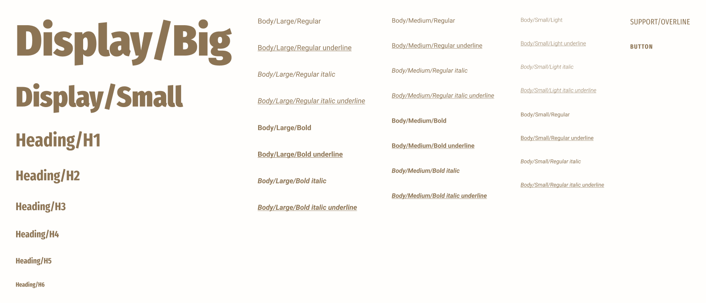

Laying the groundwork
Before defining new styles or components, I conducted a thorough audit of JDE's partially built design system to understand what existed, what could be reused, and where gaps remained.
From there, we established foundational styles — such as colour, typography, and spacing — using design tokens. This token-based system allowed us to rapidly theme for each brand and make updates efficiently, while ensuring alignment with the developers’ existing implementation. Collaborating closely with engineering, we refined a shared token structure that enabled consistency and maintainability across all 40+ brands.

